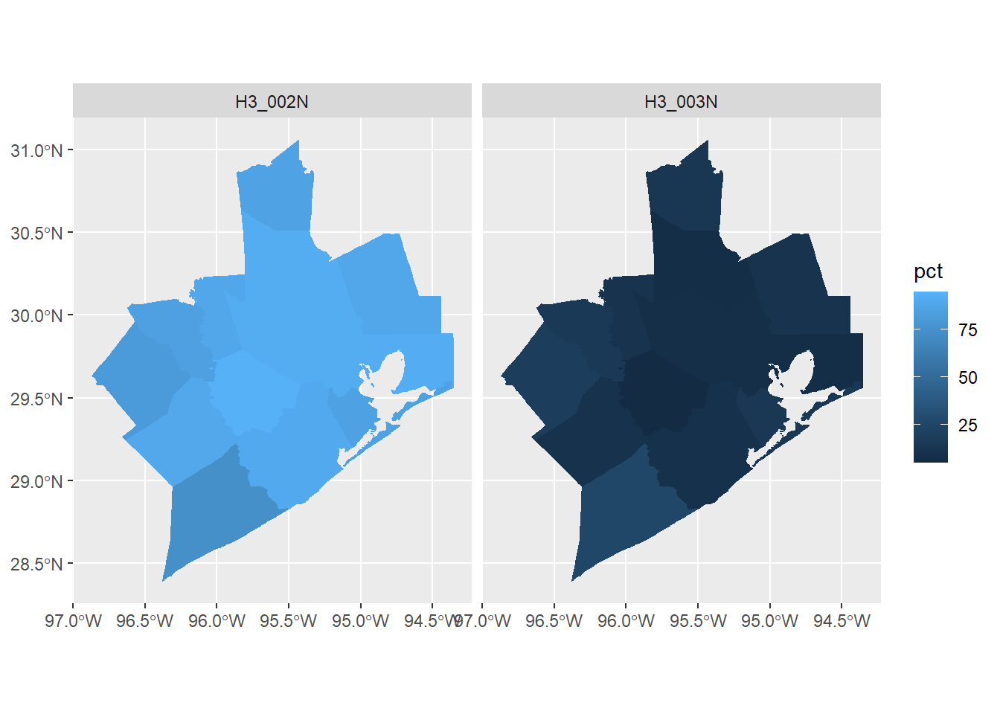
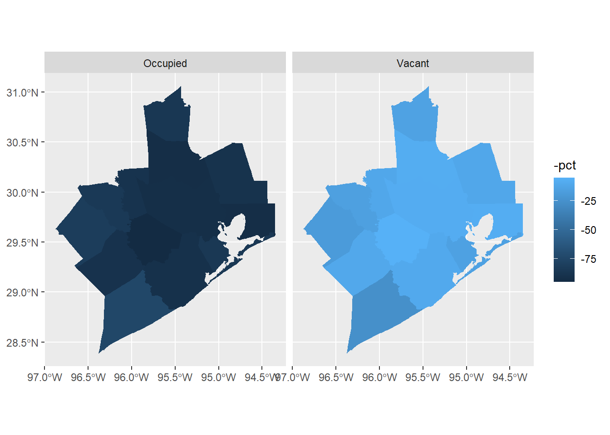

# Do this extra step the first time
# install.packages(c("tidycensus", "tidygeocoder", "censusapi", "tidyverse", "mapview"))
library(tidycensus)
library(tidyverse) # dplyr and ggplot2
library(mapview)
library(censusapi)
library(tidygeocoder)
# Check if you already have a CENSUS_KEY or CENSUS_API_KEY saved
get_api_key()
# If your key returns, no further action is neededWorking with US Census Data [DRAFT]
A Friendly Introduction to API Workflows
Hello Baker Ripley!
THANK YOU for having me!
Data and policy leader with over a decade of experience using analytics, data science, and strategic planning to support decision-making in large K-12 school systems
My work sits at the intersection of education policy, finance, data science, and program strategy.
Similar to BR: Martha O’Bryan Center in Nashville, Tennessee

On a personal angle, I earned my degrees from Notre Dame and Vanderbilt
My extended family hails from both New Jersey and New Mexico
I’ve lived in six states, including Texas for twelve years after grad school
Diversity Scholarship to Posit::Conf(2022) in DC
Before We Start
Definition:
An application programming interface (API) is a connection between computers or between computer programs. A type of software interface.
Materials:
Slides and code at pricele2.github.io/blog
Plain text API key registered to Baker Ripley
Practice CSVs at my Google Drive URL
Optional Resource: Kyle Walker’s Analyzing US Census Data: Methods, Maps, and Models in R (CC-BY-NC 2023)
Searchable Glossary at Census.gov
Federal Responsibility
Constitution requires a headcount of all persons every 10 years
Article 1 Section 2: US House seats
1790: First national count
1902: Permanent agency
Present-Day:
Within the Department of Commerce
Over 4,000 employees
Contains Multitudes
Sometimes mundane, sometimes controversial
Slavery, citizenship
Movement between places
Indigenous Peoples and LGBTQ+ civil rights
Equitable representation
Door-to-door “enumeration” for Decennial
Statistical “fuzzing” through noise injection
Diverse Data, Many Purposes
Over 130 different surveys (“data products”)
Each has its own life cycle and its own characteristics
Drives annual distribution of more than $675 billion in federal funds to local, state, and tribal governments
Three Data Products
Decennial Census of Population and Housing (10-Year).
- As required by US constitution, used for redistricting
American Community Survey (Annual).
- The social and economic needs of communities, across many demographic characteristics
Small Area Income and Poverty Estimates (Annual).
- Income and poverty statistics for all school districts, counties, and states
What do we need to know to get started?
Sources: https://www.census.gov/programs-surveys/sis/about/students101.html
TRANSITION: LOTS of data! Over 4000 employees
Can be pretty overwhelming
Geographies Start with Blocks

Our Census Location, Mapped
Let’s look up the Census Geographies for Baker Ripley Central
GEOID: Unique ID for each census block, 15 digits. 48 201 310400 3032

Blocks, Groups, Tracts
FIPS: Five-digit code for each state (48 Texas) and county (201 Harris).
Tract: Smaller than a county: think neighborhood. Contains block groups.
Ideally contain about 4,000 people and 1,600 housing units.
Harris County has 1,115 Census tracts (2020 DHC)
Block Group: A subdivision of a census tract. Contains blocks.
Generally between 600 — 3,000 people and 240 — 1,200 housing units.
Smallest unit for which the Bureau tabulates data for any survey other than Decennial.
Harris County has 2,830 block groups
Block: The smallest unit for which the Bureau tabulates decennial census data.
In cities, many blocks correspond to individual city blocks bounded by streets.
Harris County has 51,077 Census blocks
Online Data Outside API
Find Geographies for One Address
Great for exploring what exists!
Free Learning Resources:
Census Academy Courses/Webinars
National Historic Geographic Info System
Housed at the University of Minnesota
The IPUMS National Historical Geographic Information System (NHGIS) provides free online access to summary statistics and GIS files for U.S. censuses and other nationwide surveys from 1790 through the present.
The National Historical Geographic Information System (NHGIS) provides easy access to summary tables and time series of population, housing, agriculture, and economic data, along with GIS-compatible mapping files, for years from 1790 through the present and for all levels of U.S. census geography, including states, counties, tracts, and blocks.
Access via API
Professional tools for professional purposes
Reproducible, reusable code
Minimize chaos & navigation clutter
Point and click is not future-proof
Do it for your future self
Let’s start
Set Up Census API Key
# If not, use the functions you've already loaded
# To add your key to your R environment file
census_api_key("PASTEYOURKEYHERE", overwrite = FALSE, install = TRUE)
# Reload .Renviron and check again
readRenviron("~/.Renviron")
# Confirm that the expected key prints to Console
get_api_key() Applause!!!
Demographic & Housing Characteristics (DHC)
“The Decennial Census”
# Using the load_variables() function
# From the tidycensus package
vars_dhc = load_variables(2020, dataset = "dhc")
# View(vars_dhc)Run View(vars_dhc) and sort by name
Prefix H ~ Housing (683 variables)
Prefix P ~ Population
What patterns do you see?
Redistricting Dataset (PL)
Smaller dataset produced from DHC for redistricting under Public Law 94-171 (PL)
The summary file tables include:
P1. – Race
P2. – Hispanic or Latino, and not Hispanic or Latino by Race
P3. – Race for the Population 18 Years and Over
P4. – Hispanic or Latino, by Race for the Population 18 Years and Over
P5. – Group Quarters Population by Major Group Quarters Type
H1. – Occupancy Status (Housing)
P1_001N : Total Pop from DHC
Let’s use the script!
By default, get_decennial() sets the arguments year = 2020 and sumfile = “pl”.
The county field accepts a string or FIPS code (“201”).
Try “Harris” first.
harris_pop_2020 = get_decennial(
geography = "tract",
variables = "P1_001N", # TOTAL POPULATION
state = "TX",
county = "Harris County",
sumfile = "pl",
year = 2020,
geometry = FALSE,
show_call = TRUE) Harris County, 2020
Number of units in the geography
length(unique(harris_pop_2020$GEOID))[1] 1115And here is our total population:
h_pop = harris_pop_2020 |>
group_by(variable) |>
summarise(pop = sum(value))
print(h_pop[1,])# A tibble: 1 × 2
variable pop
<chr> <dbl>
1 P1_001N 4731145What happens when you swap in year = 2010?
P001001 : Population from PL 2010
Different variable name for Total Population!
vars_pl_2010 = load_variables(2010, "pl") # Let's look for it
harris_pop_2010 = get_decennial(
geography = "tract",
# variables = "P1_001N", # Varname from 2020
variables = "P001001",
state = "TX",
county = "Harris County",
sumfile = "pl",
year = 2010,
geometry = FALSE,
show_call = TRUE)Getting data from the 2010 decennial CensusCensus API call: https://api.census.gov/data/2010/dec/pl?get=P001001%2CNAME&for=tract%3A%2A&in=state%3A48%2Bcounty%3A201Using the PL 94-171 Redistricting Data Summary Fileh_pop_2010 = harris_pop_2010 |>
group_by(variable) |>
summarise(n = sum(value))What do you learn when you run print(h_pop_2010[1,]) ?
Population in all 13 counties
13 counties served by Baker Ripley and Workforce Solutions
List at https://www.wrksolutions.com/regional-economic-data/
# Another tool is tidycensus::data()
fips_codes = data("fips_codes")
ws_gulf_coast = c("015", "039", "071", "089", "157", "167", "291", "321","339", "471", "473", "481", "201")
gulf_coast_pop_2020 = get_decennial(
geography = "block group",
variables = "P1_001N", # TOTAL POPULATION
state = "TX",
county = ws_gulf_coast,
sumfile = "dhc", year = 2020, geometry = FALSE,
show_call = TRUE)Getting data from the 2020 decennial CensusCensus API call: https://api.census.gov/data/2020/dec/dhc?get=P1_001N%2CNAME&for=block%20group%3A%2A&in=state%3A48%2Bcounty%3A015%2C039%2C071%2C089%2C157%2C167%2C291%2C321%2C339%2C471%2C473%2C481%2C201Using the Demographic and Housing Characteristics Fileall_pop = gulf_coast_pop_2020 |> group_by(variable) |>
summarise(pop = sum(value)) # 7,297,022
print(all_pop[1,])# A tibble: 1 × 2
variable pop
<chr> <dbl>
1 P1_001N 7297022Try Housing Occupancy, by County
Here, using the DHC file and variable names
## 13 Counties served by Workforce Solutions
gulf_housing_2020 = get_decennial(
geography = "county",
variables = c("H3_002N", "H3_003N"), # Occupied, Vacant
summary_var = "H3_001N", # total Housing Units
state = "TX",
county = ws_gulf_coast,
sumfile = "dhc",
year = 2020, geometry = TRUE, # Changed from FALSE
show_call = TRUE) |>
mutate(pct = 100 * (value / summary_value)) Once we have the datset, we plot in the next step:
# Note: the mutate / value / summary syntax here is specific to tidycensus
# Otherwise would require a group_by() summarize() situation
ggplot(gulf_housing_2020, aes(fill = pct, color = pct)) +
geom_sf() +
facet_wrap(~ variable)
Let’s Clean Up The Map
gulf_counties2 = gulf_housing_2020 |>
rename(summary_value, "Housing Units" = summary_value) |>
mutate(housing_status =
case_when(
variable == "H3_002N" ~ "Occupied",
variable == "H3_003N" ~ "Vacant"
)) |>
select(-variable)Rename items, and then reverse-code the fill and color
ggplot(gulf_counties2,
aes(fill = -pct, color = -pct)) +
geom_sf() +
facet_wrap(~ housing_status)
Brainstorm Time
First things first
What are some characteristics of Head Start neighborhoods?
But 2020 is Ancient History
DCH and PL are good datasets for 2020
What about everything that’s happened since then?!
ACS and Population Changes
American Community Survey (Annual). The social and economic needs of communities, across many demographic characteristics.
tidycensus::get_acs()also handles ZIP or ZCTRA inputs
SAIPE and Children
Small Area Income and Poverty Estimates (Annual). Income and poverty statistics for all school districts, counties, and states.
Not included in
tidycensusfunctionalityIs included in
censusapitoolkit“timeseries/poverty/saipe” # States and Counties, through 2024
“timeseries/poverty/saipe/schdist” # Districts, through 2024
Putting It All Together
BR locations
Batch geocode
Locate
Identify datasets